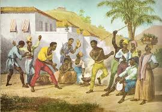
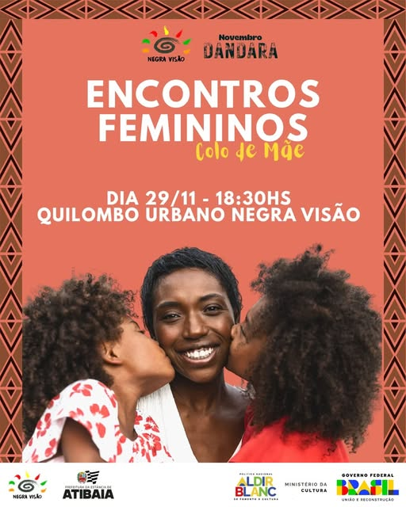
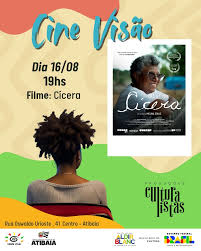
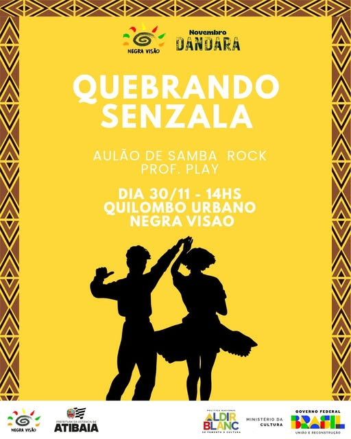
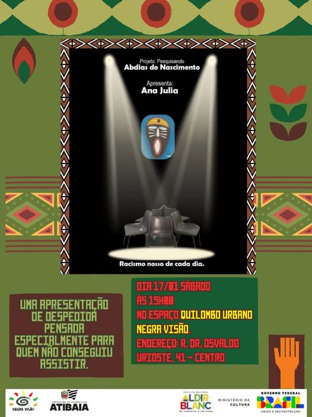
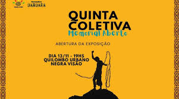
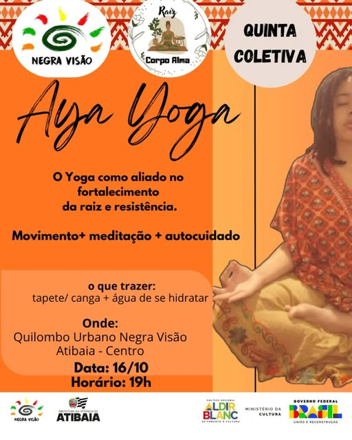
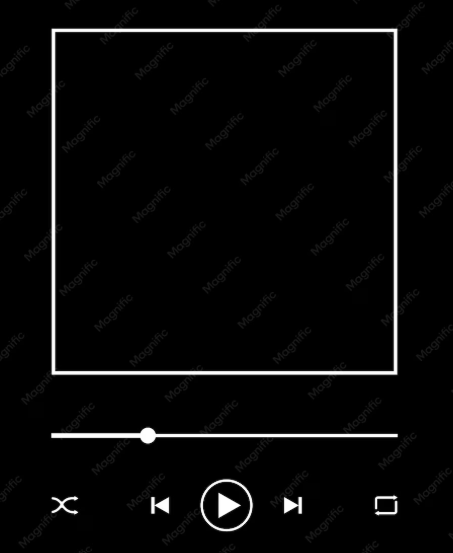

A CULTURA PRETA É RESISTÊNCIA.
A Negra Visão é uma associação cultural de Atibaia-SP que luta pela difusão da cultura preta, pelo fortalecimento da identidade negra e pelo combate ao racismo, através da arte, da memória e da mobilização coletiva.
NÃO SOMOS APÊNDICE. SOMOS CENTRO
Por séculos, a contribuição negra foi apagada, folclorizada ou reduzida a datas de calendário. A Negra Visão nasceu para inverter essa lógica, colocando a cultura, a história e a voz negra no centro da vida cultural de Atibaia.
Existir é um ato político.
Celebrar é uma forma de resistir.
Educar é transformar.
A memória ancestral é tecnologia.
EVENTOS
CAPOEIRA
14 Junho
19:30

colo de mãe
29 Novembro - 30 Novembro
18:30

CINE VISÃO
6 Novembro
18:30

dança: samba rock
30 Novembro
14:00

Teatro: Ana julia
12 Julho
15:00

QUINTA COLETIVA
13 Novembro
19:00

aya yoga
16 Outubro
19:00

IDENTIDADE NEGRA NA PERIFERIA BRASILEIRA
Neste episódio, conversamos com a pesquisadora e ativista Dra. Camila Nascimento sobre como a juventude negra periférica reconstrói sua identidade através da arte, do rap e da organização comunitária.

memorial negro
O Memorial Negro é o espaço onde a história fala por si. Reunimos peças, objetos e documentos históricos que contam a trajetória do povo negro no Brasil — da resistência dos quilombos à riqueza das tradições africanas que cruzaram o oceano e floresceram nesta terra.
Cada peça do nosso acervo carrega uma história que merece ser vista, tocada com os olhos e sentida com o coração. O Memorial está aberto para visitas na sede da Negra Visão em Atibaia — venha descobrir, se emocionar e reconhecer a grandeza de uma cultura que jamais se apagou.
nossa biblioteca
A Negra Visão possui uma biblioteca dedicada à história, à literatura e ao pensamento negro brasileiro e africano. Um acervo construído com cuidado e afeto, reunindo obras que contam histórias que o mundo muitas vezes escolheu não contar.
Nossa biblioteca está aberta a toda a comunidade. Você pode visitar, consultar os volumes e, se quiser levar uma obra para casa, o empréstimo é simples e gratuito. Acreditamos que o acesso ao conhecimento é parte fundamental do nosso trabalho, e que cada livro lido é mais uma semente plantada.